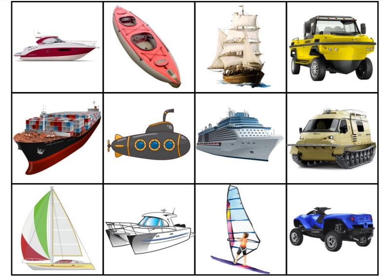
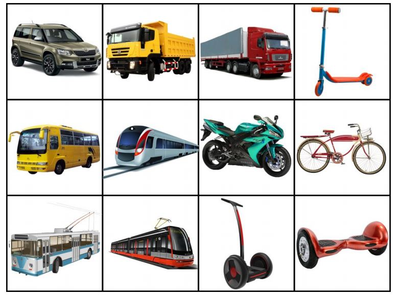
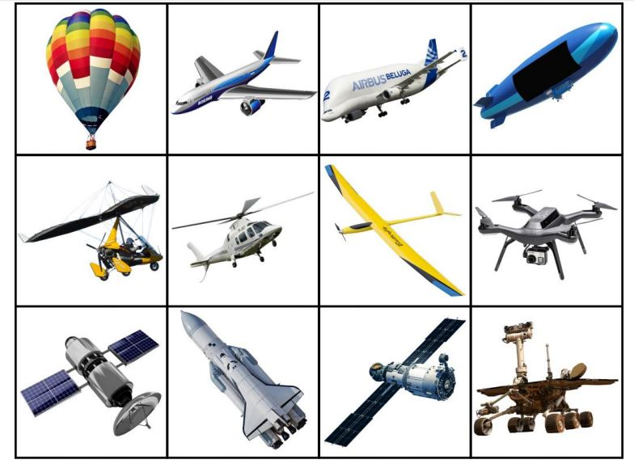
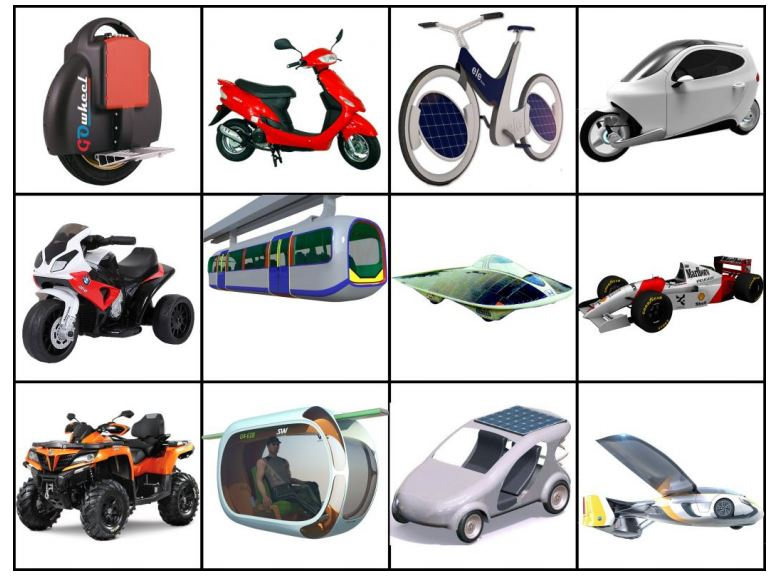

Тиждень 22. Транспорт
Дослідницькі / проблемні запитання
- Який буває транспорт?
- Як бути гарним пасажиром?
- Для чого потрібні правила дорожнього руху?
- Який транспорт найкращий?
- Який транспорт є у моїй місцевості?
Завдання для тижня
- Дослідити різні види транспорту, зокрема й ті, що є в рідній місцевості.
- Поглибити знання дітей про правила дорожнього руху.
- З’ясувати важливість правил користування транспортом.
- Формувати екологічну свідомість учнів.
- Навчати висловлювати свою думку, уважно слухати співразмовника, взаємодіяти з однокласниками.
Корисні завдання
Картки “Такий різний транспорт” (до с. 41 підручника)
Обноворіть їх




Міжміський транспорт майбутнього (до с. 46 підручника)
Міський транспорт майбутнього (до с. 46 підручника)
Кросворд “Транспорт навколо нас“ (до с. 41 підручника)
Дивуємо дітей незвичайним транспортом у різних країнах світу
Про що знаки говорять (до с. 42 підручника)
Вивчаємо знаки, які зустрічаються навколо, класифікуємо їх, розшифровуємо зміст